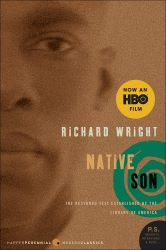
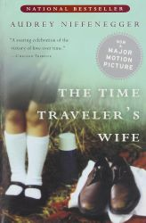
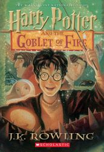

About 5 months ago, my parents and I took a day trip to Block Island (an 3x7 mile island located south of the mainland portion of Rhode Island). We drove to a port at Point Judith to take a one hour long ferry to the island and rented bikes for the day as our primary mode of transporation within the island. During our excursion, we briefly visited multiple historical sites, mini-zoos, beaches, lighthouses, and trailheads.
My favorite restaurant is Nijiya Sushi: https://www.nijiyasushi.net/
I love this restaurant because I love sushi, but I always feel the need to eat it in moderation due to how expensive it is. Since Nijiya has a pretty good all you can eat deal, this is a place where I can enjoy as much sushi as I want in one meal. The sushi quality is pretty good too.
I like to serve Chicken Parm with a serving of Penne Pasta cooked in Marinara Sauce, and to top it all with some Crushed Red Pepper and grated Parmesan Cheese. I eat the chicken with a fork and knife, and eat the pasta with a fork.
Source: https://unsplash.com/photos/a-plate-of-food-with-meat-and-broccoli-HhEfe0DeMiA| Name | Cover Image | Author | Summary |
|---|---|---|---|
| Native Son |  | Richard Wright | A young black man named Bigger Thomas works for a wealthy white family in Chicago and accidentally kills Mary (one of the family members) on the job. This book describes the aftermath of this manslaughter from Bigger's perspective. |
| Every Day | David Levithan | A genderless spirit who goes by the name A wakes up in a new person's body every day, temporarily taking control of their life for 24 hours. They live their life causing as little disruption to their hosts' lives as possible until one day, they fall in love with a girl named Rhiannon. | |
| The Time Traveler's Wife |  | Audrey Niffenegger | This book describes the relationship between Henry and Clare while Henry experiences a disorder that causes him to involuntarily travel through time. This disorder causes Henry and Clare to experience different chronologies. |
| Harry Potter and the Goblet of Fire |  | J.K. Rowling | This book describes Harry Potter's fourth year at Hogwarts School of Witchcraft and Wizardry, where Harry was entered into a competition called the Triwizard Tournament without his consent. Unbeknownst to the school officials, a sinister plot by Lord Voldemort is unfolding at every corner. |